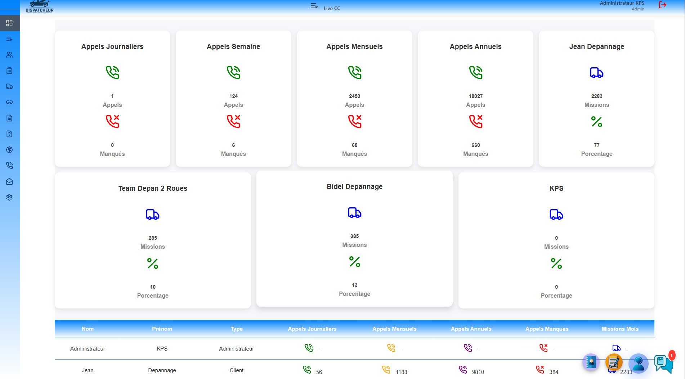
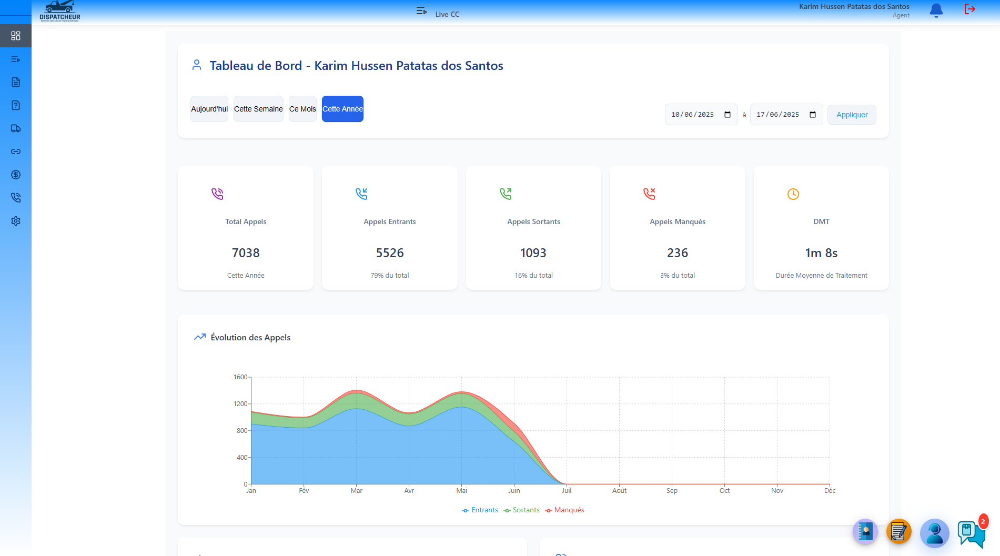
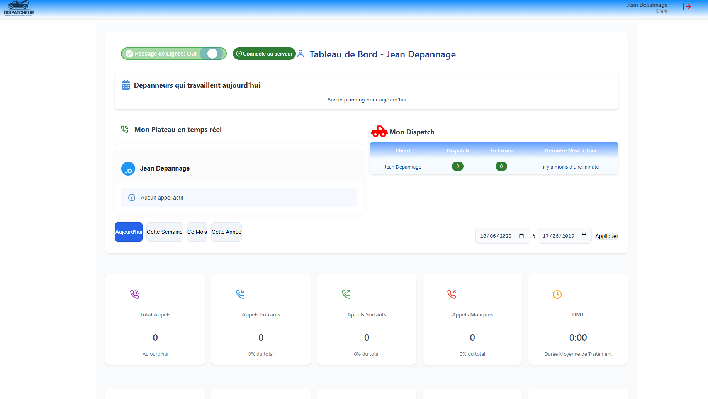

DispatcheurCC
Sistema de Gestão de Operações de Reboque
Projeto Final de Licenciatura em Informática
Karim Hussen Patatas Hassam dos Santos - A042542
Orientador: Marco Aurélio Amaro Oliveira
2024/2025
Agenda da Apresentação
Contextualização do Problema
Setor de Reboques Francês
Mercado fragmentado com múltiplas empresas operando de forma isolada
Perdas Económicas
€2.3 mil milhões perdidos anualmente na União Europeia
Ineficiências Operacionais
Sistemas desatualizados e processos manuais ineficazes
Motivação do Projeto
Objetivos do Projeto
Unificação Operacional
Centralizar e padronizar processos de despacho em toda a rede
Otimização de Processos
Automatizar tarefas repetitivas e reduzir tempos de resposta
Transparência e Conformidade
Garantir rastreabilidade completa e conformidade regulamentar
Arquitetura Geral do Sistema
Frontend (React)
Backend (Node.js)
Base de Dados (MySQL)
Stack Tecnológico
Backend
Frontend
Comunicação
VoIP
Justificação das Escolhas Técnicas
Ideal para operações I/O intensivas e comunicação em tempo real
Interface de utilizador moderna, reativa e de fácil manutenção
Comunicação bidirecional robusta com fallbacks automáticos
Base de dados relacional madura com excelente performance
Cache em memória para sessões e dados frequentemente acedidos
Backend API
Arquitetura RESTful
Design consistente seguindo princípios REST
Autenticação JWT
Segurança robusta com tokens stateless
+50 Endpoints
Cobertura completa de funcionalidades
Integrações Externas
Conexão com serviços terceiros e APIs
Frontend React
Painel de Controlo Administrativo
Painel de Controlo do Agente
Painel de Controlo do Cliente
Extensão Chrome
Monitorização Automática
Deteção de alterações em páginas web em tempo real
Manifest V3
Compatibilidade com a mais recente API do Chrome
WebSockets
Comunicação direta com o servidor principal
Sistema VoIP - INOVAÇÃO
Chamadas Simultâneas
Capacidade única no mercado de reboques
Conexão direta com operadores franceses
Gestão visual e intuitiva de conversas
Tecnologia de ponta para comunicação web
Funcionalidades VoIP Avançadas
Componente de Interface
Gestão de Chamadas
Diretório de Contactos
Hold/Resume
Colocar e retomar chamadas com um clique
Transferência
Encaminhar chamadas entre operadores
Incoming/Outgoing
Gestão completa de chamadas recebidas e efetuadas
User Stories e Validação
Metodologia SMART: Critérios específicos, mensuráveis, atingíveis, relevantes e temporais
Testes de Performance
Resultados Operacionais
Principais Dificuldades Encontradas
Duplicação de Correio Eletrónico
23% dos casos apresentavam emails duplicados, exigindo algoritmo de deduplicação
WebSockets em Dispositivos Móveis
Complexidade adicional na manutenção de conexões em dispositivos móveis
Escalabilidade
Desafios nos testes de carga com múltiplas conexões simultâneas
Principais Conquistas Técnicas
Arquitetura Escalável
Sistema robusto capaz de suportar crescimento exponencial
Integração VoIP Inovadora
Primeira solução no mercado com 10 chamadas simultâneas
Performance Excecional
Tempos de resposta inferiores a 200ms em 95% dos casos
Segurança Consolidada
Implementação completa de boas práticas de segurança
Trabalho Futuro
Expansão Mobile
Desenvolvimento de aplicações iOS e Android dedicadas
Inteligência Artificial
Algoritmos de otimização de rotas e previsão de procura
Integração Pagamentos
Sistema completo de faturação e pagamentos online
Mercado Europeu
Expansão para outros países da União Europeia
Conclusões
Solução Robusta e Inovadora
Sistema completo que resolve os principais problemas do setor
Impacto Real no Setor
Resultados mensuráveis em eficiência e satisfação do cliente
Base para Expansão Futura
Arquitetura preparada para crescimento e novas funcionalidades
Referência no Mercado Francês
Potencial para se tornar standard da indústria
Demonstração da Aplicação
Demonstração completa do sistema DispatcheurCC em funcionamento
- Interface administrativa e de agente
- Sistema VoIP com múltiplas chamadas
- Extensão Chrome em tempo real
- Dashboard do cliente
Obrigado pela Atenção
Perguntas e Discussão
Karim Hussen Patatas Hassam dos Santos
A042542
Licenciatura em Informática
question_answer Estou disponível para responder às vossas questões